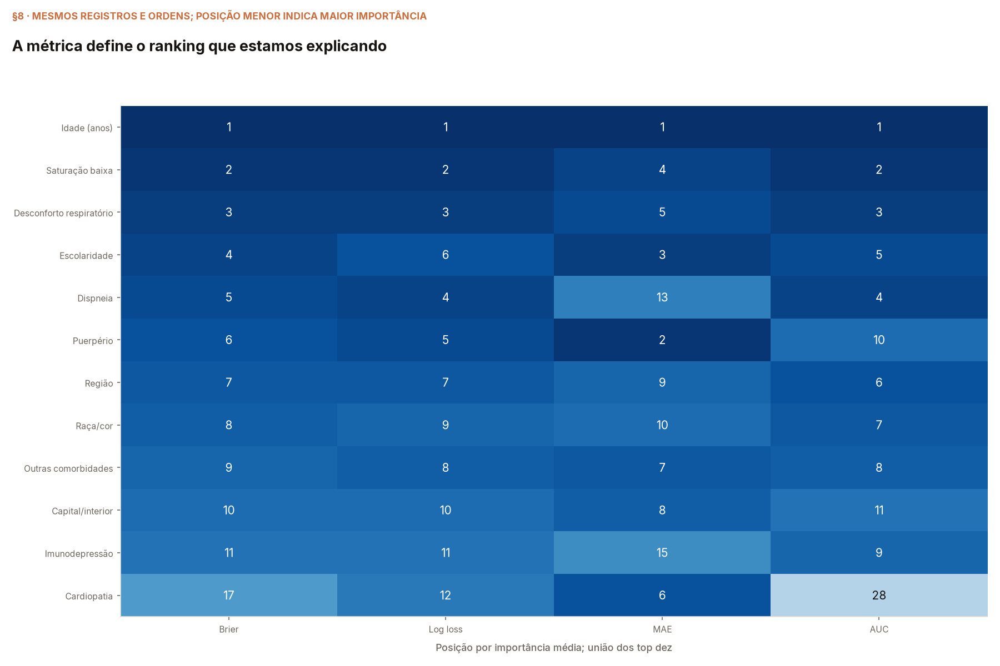
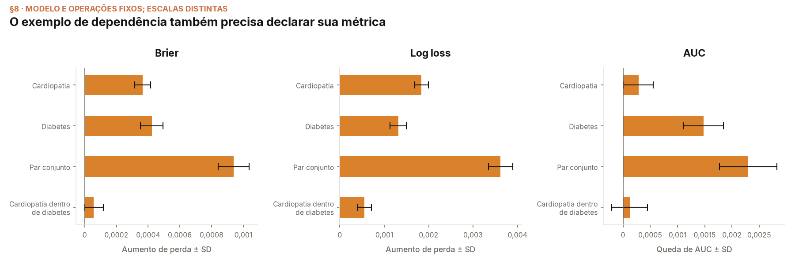

Não foi possível carregar a evidência. Abra pelo servidor HTTP da aula.
A mesma permutação, outra régua
Saturação baixa
Barras: original e média do teste completo após permutar. Bigodes: um desvio padrão entre permutações. Os dois gráficos usam a mesma escala na métrica selecionada; diferenças brutas entre métricas não são diretamente comparáveis.
O que muda no ranking?
| Variável | Posição Brier | Posição log loss | Posição MAE | Posição AUC | Importância média | SD |
|---|
Ordenação pela métrica selecionada. Importância positiva significa aumento de perda ou queda de AUC.
Ver as mudanças de posição em um gráfico

Quando as réguas discordam
Uma variável pode ajudar a ordenar o risco sem melhorar igualmente as probabilidades. Isso descreve dependência preditiva deste modelo neste teste; não é uma conclusão causal sobre vacinação.
Conferência do exemplo final de dependência
Reavaliamos cardiopatia, diabetes, o par movido junto e cardiopatia embaralhada dentro dos estados de diabetes. As operações continuam respondendo a perguntas diferentes.
| Operação | Importância na métrica selecionada | SD |
|---|
Comparar as quatro métricas nesse exemplo

O par conserva cardiopatia e diabetes entre si. A permutação por subgrupos conserva o estado de diabetes do receptor. Isso não condiciona a todas as demais entradas nem isola uma interação causal.
Qual métrica recomendamos para a aula?
Log loss como principal, com AUC como complemento. Estamos explicando probabilidades em uma tarefa de classificação. Essa escolha acompanha o exemplo de classificação de Molnar; o MAE aparece no exemplo dele de regressão, para prever a quantidade de bicicletas alugadas.
- Log loss: avalia a probabilidade atribuída ao desfecho observado. Quanto menos probabilidade o modelo deu ao que ocorreu, maior a penalidade.
- Brier: também é adequado para avaliar probabilidades. Sua distância ao quadrado oferece outra forma de explicar a penalidade; ser menos familiar não o torna incorreto.
- AUC: complementa a análise mostrando a ordenação do risco. Não substitui uma perda que avalia as probabilidades.
- MAE: serve como comparação diagnóstica neste estudo. Não o recomendamos como métrica principal da qualidade probabilística.
Como calculamos o MAE aqui? Para cada ficha, medimos a distância absoluta entre a probabilidade de óbito e o desfecho observado, depois tiramos a média. Sobrevida é 0; óbito é 1. Não arredondamos a probabilidade nem aplicamos um limiar de classificação.
Por que MAE não é a primeira escolha para probabilidades?
Ele não é uma regra de pontuação própria para probabilidades: pode favorecer uma previsão extrema em vez da chance real. Brier e log loss incentivam a probabilidade correta em média. Essa distinção decorre da propriedade que cada perda procura estimar.
A recomendação vem da pergunta que queremos responder, não de qual métrica produz o ranking mais favorável. Trocar a régua não modifica modelo, probabilidades ou classes. A apresentação adota log loss; números, equações, código e exemplos foram alinhados a essa escolha. As outras métricas permanecem nesta comparação como conferência complementar.
Escopo, limites e reprodução
Teste temporal já observado: análise exploratória. A escolha didática da métrica deve vir da pergunta, não da busca de um ranking mais favorável. Não selecionamos outro modelo com esta comparação.
A janela de fichas não estima PFI global. As três perdas podem melhorar em fichas isoladas; mudar de perda não garante que cada ficha piore. AUC não fornece uma perda por ficha.
SD varia as ordens com modelo e teste fixos. Não é um intervalo de confiança entre pacientes, entre modelos ou de transporte para outra população. As posições próximas ao limite do top dez podem variar entre sorteios.
Evidência: walkthrough §8 e resultados completos.